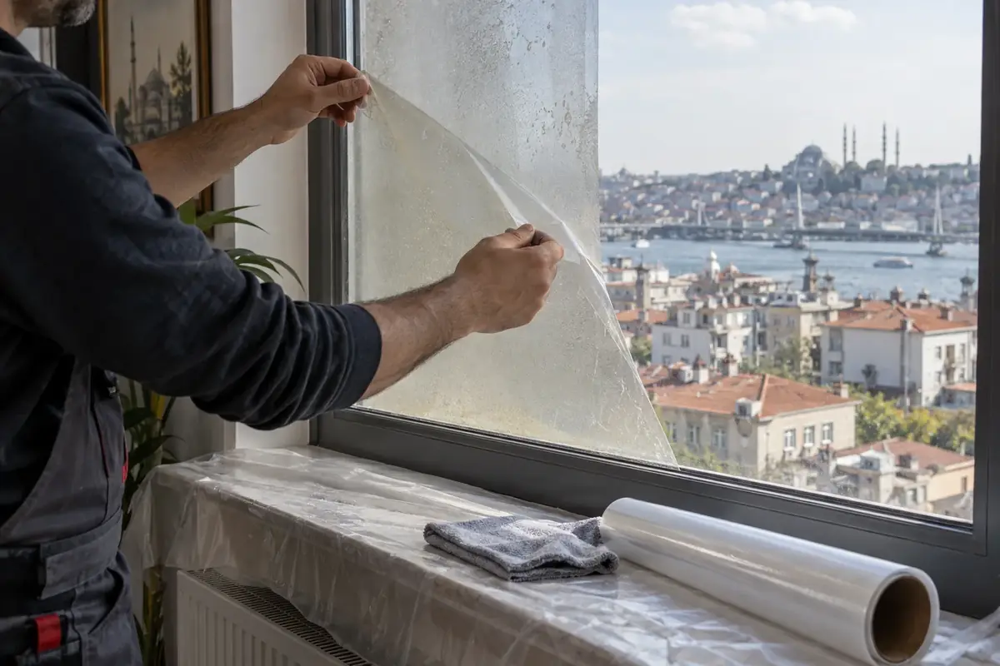
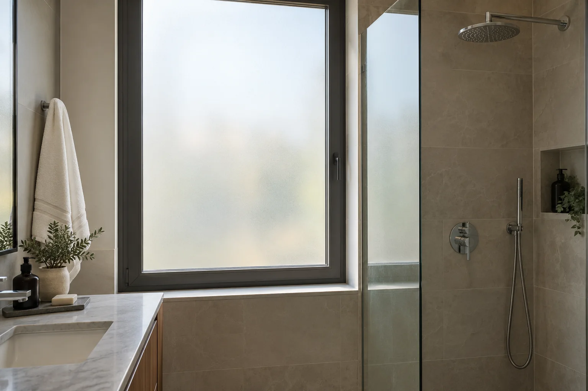
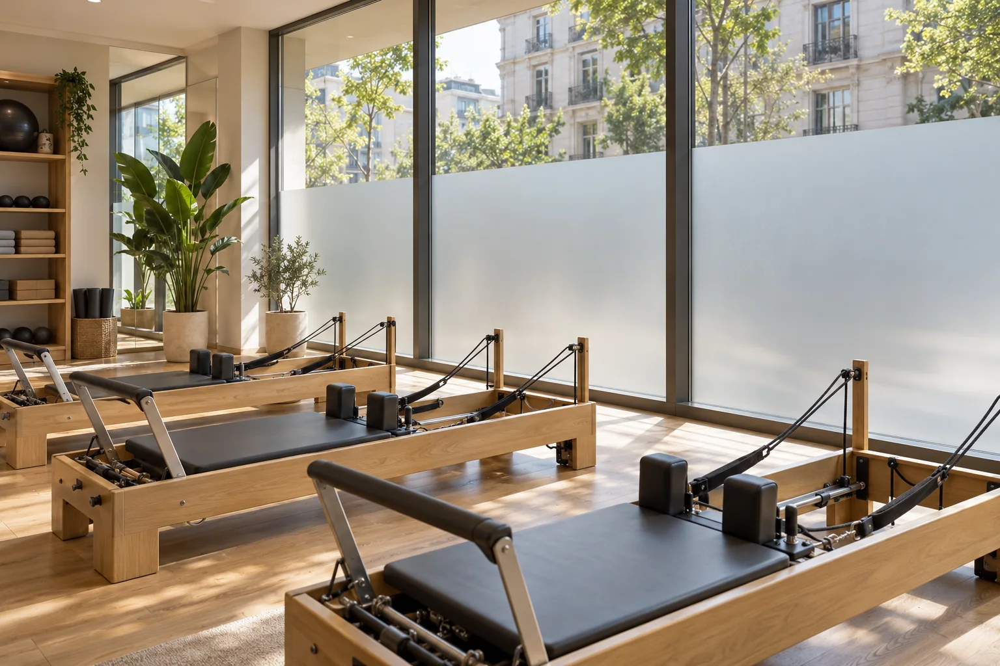
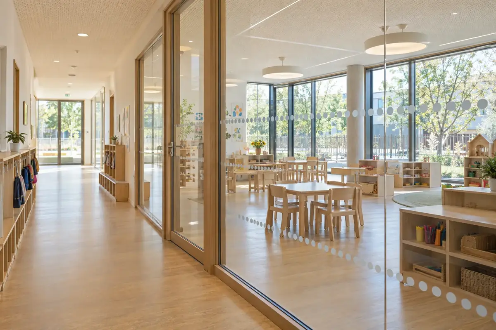
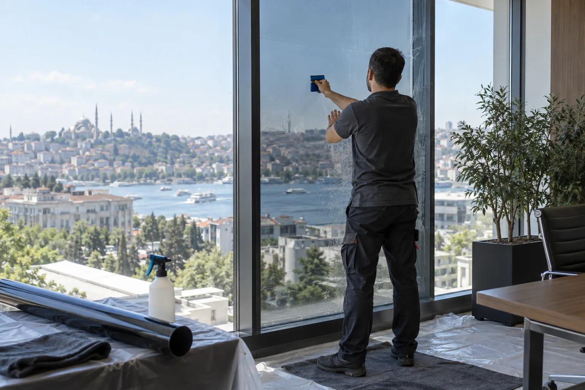
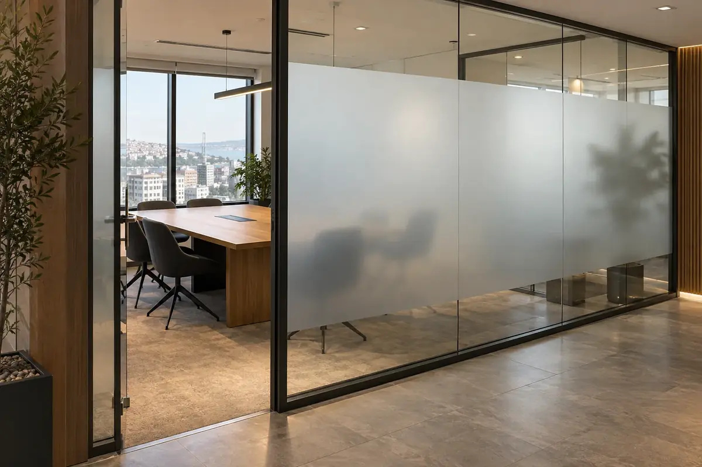
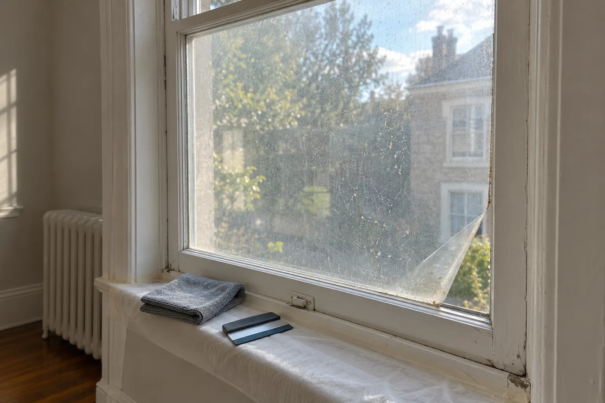
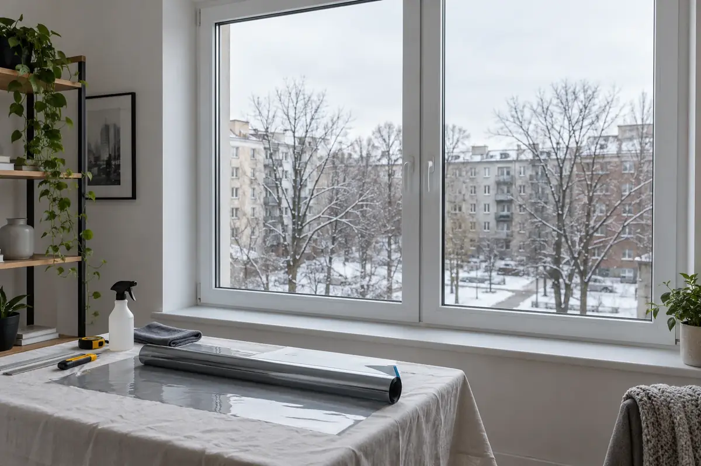
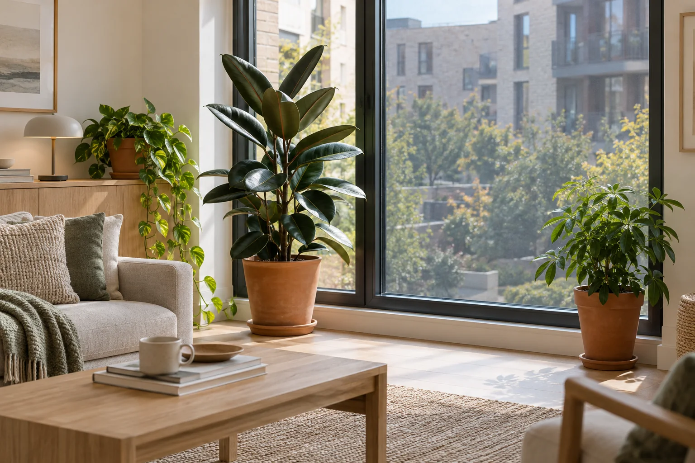
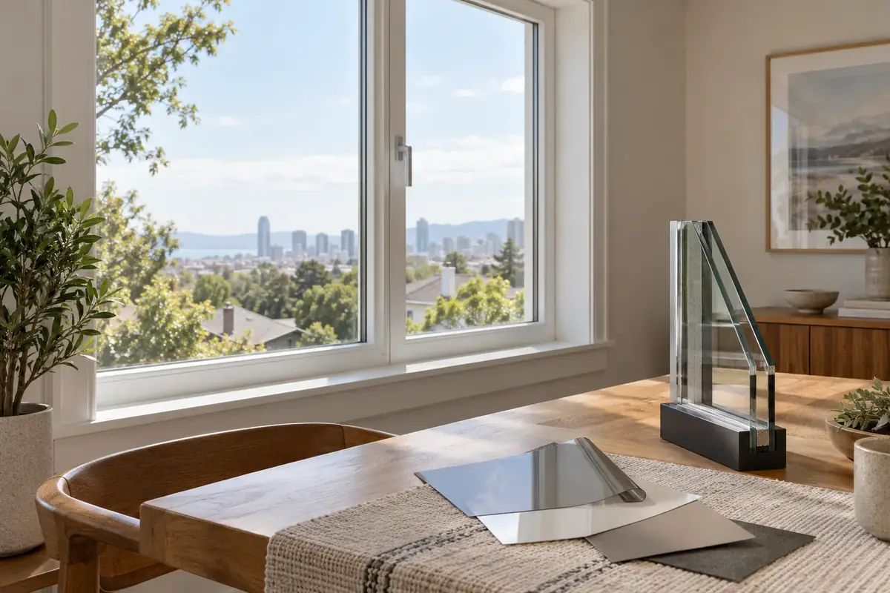

Cam Filmi Rehberleri
Cam filmi seçimi, uygulaması, bakımı, fiyatları ve farklı kullanım alanları hakkında hazırladığımız kapsamlı rehberleri inceleyin.

İstanbul Cam Filmi Sökümü ve Yenileme
Eski kaplamanın sökümü, yüzey hazırlığı ve yeni ürün seçimini adım adım planlayın.
Yazıyı Oku →
İstanbul Banyo Cam Filmi
Banyo penceresi ve duşakabinde ışık, gece mahremiyeti ve bakım koşullarını değerlendirin.
Yazıyı Oku →
Spor Salonu ve Pilates Stüdyoları İçin Cam Filmi
Stüdyoda mahremiyet, güneş kontrolü ve ders programına uygun uygulama seçeneklerini inceleyin.
Yazıyı Oku →
Okul, Kreş ve Anaokulları İçin Güvenlik Cam Filmi Uygulaması
Eğitim yapılarında cam envanteri, sistem belgeleri, uygulama ve bakım planını öğrenin.
Yazıyı Oku →
İstanbul Cam Filmi Ustası
Ürün, cam uyumu, teklif, işçilik ve teslim koşullarını karşılaştırarak uygulayıcı seçin.
Yazıyı Oku →
Statik ve Yapışkanlı Cam Filmleri: Hangisi Hangi Alanda Kullanılır?
Geçici kullanım, kalıcı uygulama, mahremiyet ve söküm için iki tutunma yöntemini karşılaştırın.
Yazıyı Oku →
Seramik ve Metalize Cam Filmi Karşılaştırması: Isı, Işık ve Görünüm
Film türlerini koyulukla sınırlamadan ışık, güneş enerjisi ve yansıtıcılık verileriyle değerlendirin.
Yazıyı Oku →
Camı Matlaştırmak İçin Kumlama mı, Buzlu Film mi Tercih Edilmeli?
Cam yüzeyini değiştiren kumlama ile ayrı bir kaplama olan buzlu filmin kullanım farklarını öğrenin.
Yazıyı Oku →
Eski Cam Filminin Üzerine Yeni Film Çekilir mi?
İkinci katmanın sınırlarını ve eski filmi çıkararak doğru yenileme yapmanın kontrol adımlarını inceleyin.
Yazıyı Oku →
Soğuk Havada Cam Filmi Uygulaması: Kuruma ve Montaj Koşulları
Kış uygulamasını cam sıcaklığı, ürün talimatı, nem ve bakım koşullarıyla birlikte planlayın.
Yazıyı Oku →Cam Filmi Telefon Çekimini ve Wi-Fi Bağlantısını Zayıflatır mı?
Mobil şebeke ile Wi-Fi bağlantısını ayırarak ürün yapısının ve bina koşullarının rolünü değerlendirin.
Yazıyı Oku →
Cam Filmi Dışarıdan Gelen Sesi Azaltır mı? Gürültü Kontrolünde Sınırları
Standart filmin akustik sınırlarını, doğrama bakımını ve ses kontrolü için gerekli değerlendirmeleri öğrenin.
Yazıyı Oku →Kiralık Ev İçin Cam Filmi Seçimi: Mahremiyet ve Kolay Söküm
Günlük mahremiyet ihtiyacınızı, taşınma sırasında söküm ve evin teslim planıyla birlikte ele alın.
Yazıyı Oku →
Cam Filmi Kullanılan Evlerde Bitki Bakımı: Işık Geçirgenliği Neden Önemli?
Bitkili odalarda ışık miktarı, pencere yönü, saksı konumu ve bakım değişimini birlikte izleyin.
Yazıyı Oku →
Pencereleri Değiştirmek mi Cam Filmi Yaptırmak mı? İhtiyaca Göre Karar Rehberi
Cam arızası, hava kaçağı, güneş ve mahremiyet için hangi müdahalenin gerektiğini ayırt edin.
Yazıyı Oku →Cam Filmi Fiyatları 2026: Metrekare Fiyatları ve Maliyeti
Fiyatı oluşturan değişkenleri ve sağlıklı teklif karşılaştırmasını öğrenmek.
Yazıyı Oku →AVM’ler İçin Cam Filmi Seçimi ve Uygulama Rehberi
AVM camlarında uygun filmi, planlamayı ve operasyon koşullarını değerlendirmek.
Yazıyı Oku →Cam Filmi Kaç Yıl Dayanır? Kullanım Ömrünü Etkileyen Faktörler
Cam filminin ömrünü, yaşlanma belirtilerini ve değişim zamanını öğrenmek.
Yazıyı Oku →Eski Cam Filmi Cam Yüzeyden Nasıl Çıkarılır?
Eski filmi ve yapışkan kalıntısını cama zarar vermeden sökmeyi öğrenmek.
Yazıyı Oku →Cam Filmi Kaplama İşlemi Kaç Saat Sürer?
Uygulama süresini etkileyen hazırlık, alan ve erişim koşullarını öğrenmek.
Yazıyı Oku →Yeni Uygulanan Cam Filminin Bakımı Nasıl Yapılır?
Yeni filmin ilk günlerinde ve uzun vadede doğru temizliği öğrenmek.
Yazıyı Oku →Cam Filminde Kabarcık Neden Oluşur? Ne Zaman Geçer?
Kabarcığın kuruma belirtisi mi uygulama sorunu mu olduğunu anlamak.
Yazıyı Oku →Cam Filminin Kenarları Neden Kalkar ve Film Neden Soyulur?
Kenar kalkması ve soyulmanın nedenlerini ve doğru çözümü öğrenmek.
Yazıyı Oku →Yanlış Cam Filmi Uygulaması Camı Çatlatabilir mi?
Film ve cam uyumsuzluğunda termal stres riskini anlamak.
Yazıyı Oku →Isıcam ve Çift Camlara Cam Filmi Uygulanır mı?
Çift cam ve özel kaplamalı camlarda uyumluluğun nasıl değerlendirildiğini öğrenmek.
Yazıyı Oku →Cam Filmi Pencerenin İçine mi Dışına mı Uygulanır?
İç ve dış yüzey uygulamasının hangi koşullarda seçildiğini öğrenmek.
Yazıyı Oku →Cam Filmi Tonu Nasıl Seçilir? Açık ve Koyu Film Karşılaştırması
Açık ve koyu tonların görüş, ışık, estetik ve mahremiyet farkını öğrenmek.
Yazıyı Oku →Kaliteli Cam Filmi Nasıl Anlaşılır?
Bir filmin optik, yapısal ve teknik kalitesini değerlendirmeyi öğrenmek.
Yazıyı Oku →Doğru Cam Filmi Nasıl Seçilir? Kullanım Alanına Göre Rehber
Güneş, gizlilik, dekorasyon veya güvenlik ihtiyacına uygun film türünü seçmek.
Yazıyı Oku →Pencere Cam Filmi Kışın Evi Sıcak Tutar mı?
Pencere filminin kış koşullarındaki katkısını ve sınırlarını öğrenmek.
Yazıyı Oku →Güneş Kontrol Cam Filmi Klima Giderlerini Düşürür mü?
Güneş ısısının klima yüküne etkisini ve sonucu belirleyen değişkenleri öğrenmek.
Yazıyı Oku →UV Korumalı Cam Filmi Eşyaların Solmasını Engeller mi?
UV filtrelemenin mobilya, kumaş ve zemin solmasına katkısını öğrenmek.
Yazıyı Oku →Yatak Odaları İçin Gizlilik Sağlayan Cam Filmi Nasıl Seçilir?
Yatak odasında gündüz ve gece mahremiyetine uygun çözümü seçmek.
Yazıyı Oku →Kış Bahçeleri İçin Isı ve Güneş Kontrol Cam Filmi
Geniş camlı kış bahçelerinde mevsimsel konfor için film seçmek.
Yazıyı Oku →Mutfak Pencereleri İçin Isı ve Güneş Koruyucu Cam Filmleri
Mutfakta güneş, ısı, nem, temizlik ve gizlilik dengesini kurmak.
Yazıyı Oku →Giriş Katındaki Evler İçin İçeriyi Göstermeyen Cam Filmi
Sokak seviyesindeki evlerde ışığı koruyarak mahremiyet sağlamak.
Yazıyı Oku →Kafe ve Restoranlar İçin Cam Filmi Seçimi
Yeme içme alanlarında konfor, vitrin görünürlüğü ve dekorasyonu dengelemek.
Yazıyı Oku →Oteller İçin Cam Filmi: Mahremiyet, Isı ve Güvenlik
Otel odaları ve ortak alanlarda ihtiyaca göre film çözümü seçmek.
Yazıyı Oku →Klinik ve Hastaneler İçin Gizlilik Sağlayan Cam Filmleri
Sağlık alanlarında doğal ışığı koruyan görsel mahremiyet çözümlerini öğrenmek.
Yazıyı Oku →Toplantı Odaları İçin Mahremiyet ve Dekoratif Cam Filmleri
Cam toplantı odalarında görüş kontrolü ve kurumsal görünüm sağlamak.
Yazıyı Oku →Firma Logolu ve Özel Tasarımlı Cam Filmi
Cam yüzeylerde logo, desen ve kurumsal tasarım seçeneklerini öğrenmek.
Yazıyı Oku →Güzellik Merkezleri ve Kuaförler İçin Mahremiyet Cam Filmleri
Güzellik işletmelerinde mahremiyet, vitrin ve dekorasyon dengesini kurmak.
Yazıyı Oku →Kuyumcu ve Bankalar İçin Kırılmaya Karşı Güvenlik Cam Filmi
Kritik vitrin ve camlarda güvenlik filminin rolünü ve sınırlarını anlamak.
Yazıyı Oku →Eczane Vitrinleri İçin Güneş ve UV Koruyucu Cam Filmleri
Eczane vitrinlerinde güneş, UV, görünürlük ve iç konforu dengelemek.
Yazıyı Oku →İstanbul Cam Filmi Rehberleri
İlçenize özel cam filmi seçeneklerini, kullanım alanlarını ve uygulama önerilerini inceleyin.
Zeytinburnu Cam Filmi
Zeytinburnu’nda apartman daireleri, konutlar, ofisler, mağazalar ve farklı ticari yapılarda kullanılan cam yüzeyler; güneş ışığı, parlama, iç mekân…
Yazıyı Oku →Üsküdar Cam Filmi
Üsküdar’da apartman daireleri, villalar, ofisler, klinikler, mağazalar ve farklı ticari yapılarda kullanılan cam yüzeyler; güneş ışığı, parlama, iç…
Yazıyı Oku →Ümraniye Cam Filmi
Ümraniye’de rezidanslar, apartman daireleri, ofisler, plazalar, mağazalar ve farklı ticari yapılarda geniş cam yüzeylerin kullanımı oldukça yaygındır.…
Yazıyı Oku →Tuzla Cam Filmi
Tuzla’da site içi konutlar, villalar, apartman daireleri, ofisler, mağazalar ve farklı ticari yapılarda geniş cam yüzeylerin kullanımı oldukça…
Yazıyı Oku →Şişli Cam Filmi
Şişli’de plazalar, ofisler, rezidanslar, klinikler, mağazalar ve konutlarda geniş cam yüzeylerin kullanımı oldukça yaygındır. Özellikle yüksek katlı…
Yazıyı Oku →Şile Cam Filmi
Şile’de villa, yazlık konut, müstakil ev, butik işletme ve farklı ticari yapılarda geniş cam yüzeylerin kullanımı oldukça yaygındır. Özellikle teras,…
Yazıyı Oku →Sultangazi Cam Filmi
Sultangazi’de apartman daireleri, konutlar, ofisler, mağazalar ve farklı ticari yapılarda kullanılan cam yüzeyler; güneş ışığı, parlama, iç mekân…
Yazıyı Oku →Sultanbeyli Cam Filmi
Sultanbeyli’de apartman daireleri, konutlar, ofisler, mağazalar ve farklı ticari yapılarda kullanılan cam yüzeyler; güneş ışığı, parlama, iç mekân…
Yazıyı Oku →Silivri Cam Filmi
Silivri’de villa, yazlık konut, müstakil ev, apartman, ofis ve farklı ticari yapılarda geniş cam yüzeyler sıkça kullanılmaktadır. Özellikle balkon,…
Yazıyı Oku →Sarıyer Cam Filmi
Sarıyer’de villa, müstakil ev, rezidans, site içi konut, ofis ve farklı ticari yapılarda geniş cam yüzeylerin kullanımı oldukça yaygındır. Özellikle…
Yazıyı Oku →Sancaktepe Cam Filmi
Sancaktepe’de site içi konutlar, villalar, apartman daireleri, ofisler, mağazalar ve farklı ticari yapılarda geniş cam yüzeyler sıkça kullanılmaktadır.…
Yazıyı Oku →Pendik Cam Filmi
Pendik’te site içi konutlar, rezidanslar, villalar, apartmanlar, ofisler ve farklı ticari yapılarda geniş cam yüzeylerin kullanımı oldukça yaygındır.…
Yazıyı Oku →Maltepe Cam Filmi
Maltepe’de site içi konutlar, rezidanslar, apartman daireleri, ofisler, mağazalar ve farklı ticari yapılarda geniş cam yüzeylerin kullanımı oldukça…
Yazıyı Oku →Küçükçekmece Cam Filmi
Küçükçekmece’de apartman daireleri, site içi konutlar, ofisler, mağazalar ve farklı ticari yapılarda geniş cam yüzeylerin kullanımı oldukça yaygındır.…
Yazıyı Oku →Kartal Cam Filmi
Kartal’da rezidanslar, site içi konutlar, apartmanlar, ofisler, mağazalar ve farklı ticari yapılarda geniş cam yüzeylerin kullanımı oldukça yaygındır.…
Yazıyı Oku →Kağıthane Cam Filmi
Kağıthane’de rezidanslar, apartman daireleri, ofisler, plazalar, mağazalar ve farklı ticari yapılarda geniş cam yüzeylerin kullanımı oldukça yaygındır.…
Yazıyı Oku →Kadıköy Cam Filmi
Kadıköy’de apartman daireleri, konutlar, ofisler, mağazalar, klinikler ve farklı ticari işletmelerde kullanılan geniş cam yüzeyler; güneş ışığı,…
Yazıyı Oku →Güngören Cam Filmi
Güngören’de apartman daireleri, konutlar, mağazalar, ofisler ve farklı ticari işletmelerde kullanılan cam yüzeyler; güneş ışığı, parlama ve mahremiyet…
Yazıyı Oku →Gaziosmanpaşa Cam Filmi
Gaziosmanpaşa’da apartman daireleri, konutlar, ofisler, mağazalar ve farklı ticari yapılarda kullanılan cam yüzeyler; güneş ışığı, parlama ve…
Yazıyı Oku →Fatih Cam Filmi
Fatih’te apartmanlar, konutlar, oteller, mağazalar, ofisler, klinikler ve farklı ticari yapılarda kullanılan cam yüzeyler; güneş ışığı, parlama,…
Yazıyı Oku →Eyüpsultan Cam Filmi
Eyüpsultan’da apartmanlar, site içi konutlar, villalar, ofisler ve ticari yapılarda kullanılan geniş cam yüzeyler; güneş ışığı, parlama ve mahremiyet…
Yazıyı Oku →Esenyurt Cam Filmi
Esenyurt’ta site yaşamı, yüksek katlı konut projeleri, apartmanlar, ofisler ve ticari alanlarda geniş cam yüzeylerin kullanımı oldukça yaygındır.…
Yazıyı Oku →Esenler Cam Filmi
Esenler’de apartman daireleri, konutlar, ofisler, mağazalar ve farklı ticari yapılarda kullanılan cam yüzeyler; güneş ışığı, parlama ve mahremiyet…
Yazıyı Oku →Çekmeköy Cam Filmi
Çekmeköy’de villa, site içi konut, apartman, ofis ve farklı ticari yapılarda geniş cam yüzeyler sıkça kullanılmaktadır. Özellikle bahçeli evler,…
Yazıyı Oku →Çatalca Cam Filmi
Çatalca’da villa, müstakil ev, yazlık konut, iş yeri ve farklı ticari yapılarda geniş cam yüzeyler sıkça kullanılmaktadır. Özellikle bahçe, veranda,…
Yazıyı Oku →Büyükçekmece Cam Filmi
Büyükçekmece’de villa, site, apartman, yazlık konut, ofis ve ticari yapılarda geniş cam yüzeyler oldukça yaygındır. Özellikle balkon, teras, veranda ve…
Yazıyı Oku →Beyoğlu Cam Filmi
Beyoğlu; tarihi yapılar, apartmanlar, oteller, mağazalar, restoranlar, ofisler ve farklı ticari işletmelerin yoğun şekilde bulunduğu İstanbul’un en…
Yazıyı Oku →Beylikdüzü Cam Filmi
Beylikdüzü’nde site yaşamı, rezidans projeleri, modern apartmanlar, ofisler ve ticari alanlarda geniş cam yüzeylerin kullanımı oldukça yaygındır. Bu…
Yazıyı Oku →Beykoz Cam Filmi
Beykoz’da villa, müstakil ev, site içi konut, ofis ve farklı ticari yapılarda geniş cam yüzeylerin kullanımı oldukça yaygındır. Özellikle bahçe, teras,…
Yazıyı Oku →Beşiktaş Cam Filmi
Beşiktaş’ta konutlar, ofisler, mağazalar, iş merkezleri, klinikler ve ticari yapılarda kullanılan geniş cam yüzeyler; güneş ışığı, parlama ve…
Yazıyı Oku →Bayrampaşa Cam Filmi
Bayrampaşa’da konut, apartman, ofis, mağaza ve ticari yapılarda kullanılan geniş cam yüzeyler; güneş ışığı, parlama ve mahremiyet açısından farklı…
Yazıyı Oku →Başakşehir Cam Filmi
Başakşehir’de modern konut projeleri, rezidanslar, siteler, villalar, ofisler ve ticari yapılar içinde geniş cam yüzeylerin kullanımı oldukça…
Yazıyı Oku →Bakırköy Cam Filmi
Bakırköy’de konutlar, apartman daireleri, ofisler, mağazalar, klinikler ve ticari işletmelerde geniş cam yüzeyler yoğun şekilde kullanılmaktadır.…
Yazıyı Oku →Bahçelievler Cam Filmi
Bahçelievler’de apartman daireleri, site içerisindeki konutlar, ofisler, mağazalar ve farklı ticari alanlarda kullanılan geniş cam yüzeyler; güneş…
Yazıyı Oku →Bağcılar Cam Filmi
Bağcılar’da apartmanlar, konutlar, ofisler, mağazalar ve ticari yapılarda kullanılan cam yüzeyler; güneş ışığı, parlama, iç mekân sıcaklığı ve…
Yazıyı Oku →Avcılar Cam Filmi
Avcılar’da konut, apartman, ofis, mağaza ve ticari yapılarda geniş cam yüzeylerin kullanımı oldukça yaygındır. Özellikle güneş alan cephelerde iç mekân…
Yazıyı Oku →Ataşehir Cam Filmi
Ataşehir’de rezidanslar, plazalar, ofisler, mağazalar ve modern konut projelerinde geniş cam yüzeylerin kullanımı oldukça yaygındır. Bu nedenle güneş…
Yazıyı Oku →Arnavutköy Cam Filmi
İstanbul’un gelişen yerleşim bölgelerinden Arnavutköy’de konut, villa, ofis, mağaza ve ticari yapılarda kullanılan geniş cam yüzeyler; güneş ışığı,…
Yazıyı Oku →Adalar Cam Filmi
İstanbul Adalar’da konut, yazlık, villa, ofis ve ticari alanlarda kullanılan geniş cam yüzeyler; güneş ışığı, ısı, mahremiyet ve dekorasyon açısından…
Yazıyı Oku →